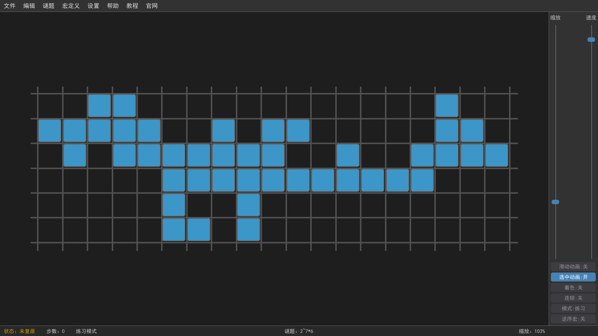
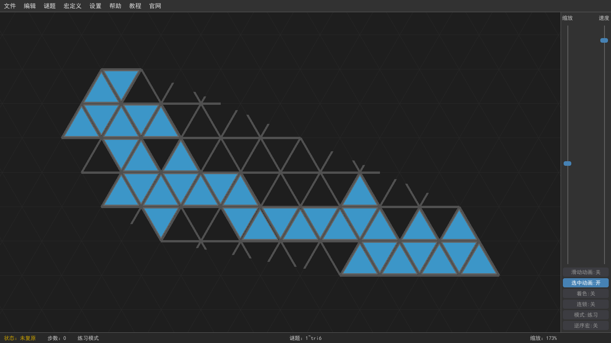
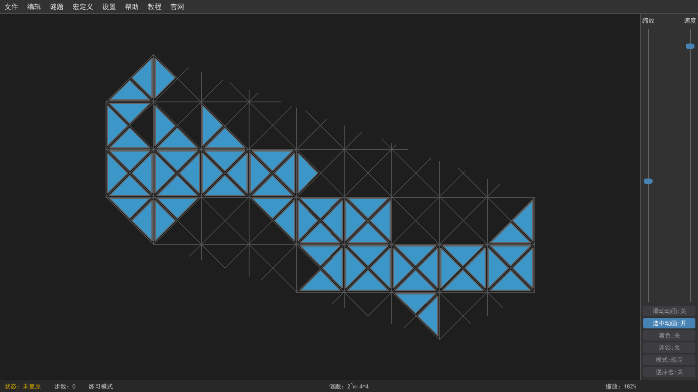
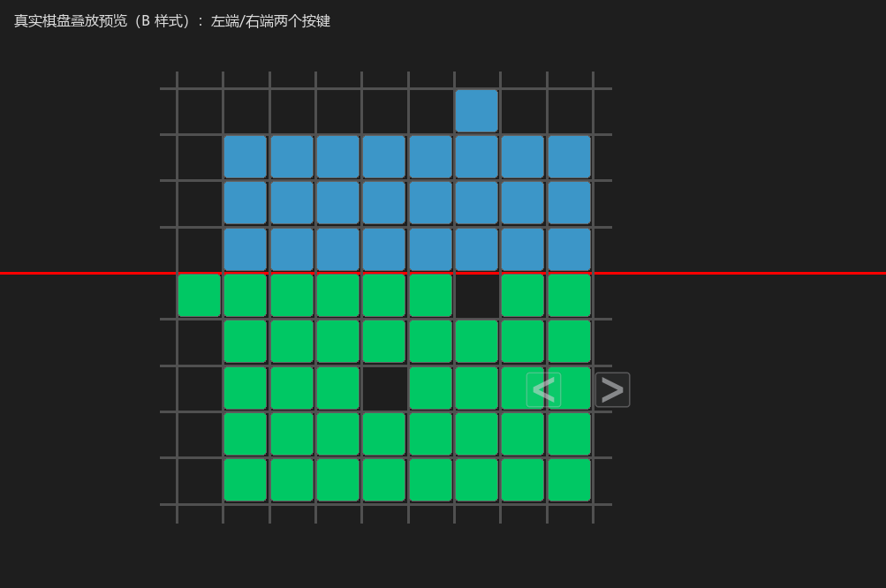
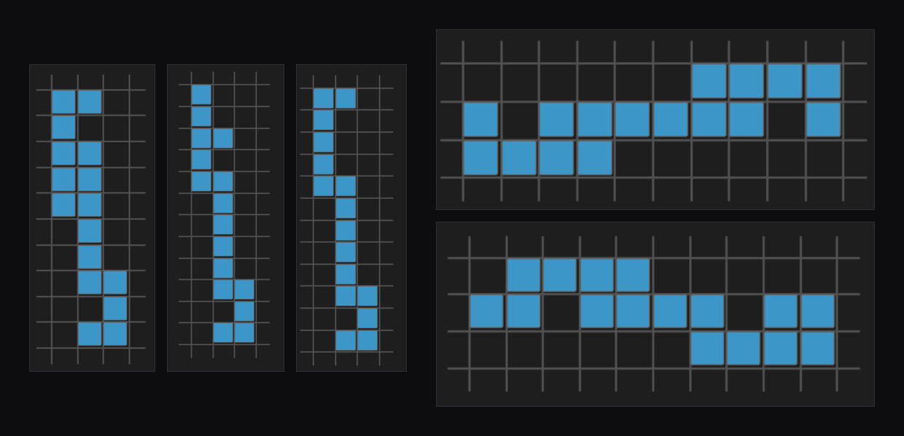

不聊玩法、不聊问答，只把「点和箭头」这张地图画给你看
貓九滑块背后藏着一张巨大的状态图：每一个局面是图里的一个点，每一次合法滑动是图里一支带方向的箭头。 这篇页子不重复《玩法详解》的游戏机制，也不重复《相关数学问题》里那些具体的数学问答—— 它只做一件事：把这张图本身的长相，以及顺着这张图会自然撞见的一个问题，用图讲清楚。
把当前所有滑块看作一团连在一起的方块（方块总数固定不变）。每一种合法的方块长相，就是状态图里的一个点（节点）。 还原态（摆满的矩形）是其中一个点；歪扭的一团是另一些点。下面三张都是真实游戏画面——同一款游戏有三种不同的板型，每一个不同长相都是图里的一个点：



图里有多少个点，就有多少种合法局面。光是 4×4 的正方形二级谜题，就有近 56 万个点。
当你做了一次合法滑动，旧局面就「指向」新局面，画一支带方向的箭头。 有意思的地方在箭头能不能反过来走——下面这张就是游戏里真实显示的滑动箭头：

真实游戏画面：选好一整片后，游戏给出的滑动方向箭头。
绝大多数箭头是双向的。因为一次滑动是「沿缝把一整片推开」，只要推过去之后那一片还能沿同一条缝推回来，这支箭头就能反着走——绝大多数时候都如此，推过去、推回来都合法。
少数是单向的。有那么一种情况：推过去之后，那一片「粘上」了（和别的块连死、再也分不回来），这支箭头就再也反不回来——只能往前，不能原路退。这一步不可逆，正是游戏里「一步错就可能回不来」的根源。
为什么大多数能退、少数会粘住？那是《玩法详解》里讲的机制、《相关数学问题》里证的定理。本页只说结论：箭头绝大多数是双向的，单向的很少。
点和箭头都不是猜的——它们是一个一个数出来、一条一条连出来的。 我们把所有合法局面枚举完，再把每一次合法滑动连成箭头，就能得到整张完整的有向图。 以 4×4 的二级谜题为例，这张图大约有 56 万个点、427 万支箭头；4×4 及以内一共 22 个谜题，我们都这样完整算过，每个点属于哪个圈子也逐个记了下来。
放大这张图的一角，长这样——绿箭头是多数能原路退回的双向箭头，红箭头是少数粘住回不来的单向箭头：
真实图有几十万个点。正是因为箭头有方向，且少数是单向的，「从哪能到哪」才不对称——下面用集合把它切分。
既然有些箭头是单向的（推过去就粘住、原路回不来），自然要问： 从某个局面出发，顺着这些箭头走，是彻底回不到还原态了，还是绕一大圈还能绕回来？
先说清楚最外面那个大框：它装的是所有合法状态——方块总数对、连成一团、 并且不违反游戏里那条「守恒」约束的每一种长相，都算一个合法局面。 这个全集有个名字，叫着色集合（那条守恒约束等价于：把格子按坐标染成若干种颜色， 滑动时每种颜色的块数始终不变，所以只有颜色配得上的长相才合法）。 它是一切数字的分母：下面每一个「有多少个局面」，都是在它里面数出来的。
拿还原态当目标，把全部点按「顺着箭头能不能回到还原态」分成几块：
那「单向箭头」制造出来的麻烦，就落在两个圆交集外面的地方：有的点虽然从还原态走得到，却再也走不回来；有的干脆两头都不沾。 而「绕远还能回来」的，正是交集里那一大片——即便中途踩过单向箭头，换个方向绕一绕，照样能回还原态。
| 圈子 | 4×4 二级 | 4×4 三级 |
|---|---|---|
| 全部局面 | 559,832 | 24,605 |
| 从还原态走得到 | 558,286 | 21,761 |
| 能走回还原态 | 559,504 | 23,163 |
| 可还原（交集） | 558,277 | 21,755 |
注：「能走回还原态」这个数，你可能在《相关数学问题》里见过，那里把它叫做「状态数」。同一个数，这里放在「能不能回来」的视角下看。
回不去的极端，是图里那些一步都走不动的点——无论怎么选缝、选哪一片，推就撞、推就断，没有任何箭头从它出去。 下面这些是游戏里几个走投无路的死局局面的真实画面——拼在一起，每一个都满盘卡死、没有任何合法一步。

真实游戏画面：若干个一步都走不动的死局局面拼在一起。
纠正记录：我们早先的笔记曾把「走得去却回不来」的几个局面称作「死局」，那是不对的——那种局面还能动，只是回不去。 真正一步都走不动的死局，4×4 二级有 52 个、三级有 327 个。本页一律用这个真口径。
把整张图算完，答案很清楚：确实有彻底回不去的点，而且分两种——
但是——把这两个数加进总盘子一看就明白，它们少得可怜。 4×4 二级近 56 万个局面里，能还原的有 558,277 个，占比 99.7% 以上。 换句话说，你随手玩一局，几乎一定落在「来回都通」的那一大片里；踩进彻底回不去的陷阱，是极小概率事件。
这些孤岛到底长什么样、有没有简单的几何特征能认出它们，目前还是个没被啃下来的开放问题——欢迎来碰。
最后看一批算出来的真实数据。对每个能回到还原态的局面，记下它最少要几步才能还原， 再按步数点一遍人头，就得到下面这两张图——横轴是「离还原态还要几步」，纵轴是「有多少个局面正好要这么多步」。
两张都是钟形：绝大多数局面挤在中间某个步数附近，两端都极少。 4×4 二级最难是 17 步，但 55 万多个局面里只有 1 个真要 17 步，绝大多数落在 8～10 步； 4×4 三级最难 29 步，同样只有 1 个，多数落在 11～14 步。 换句话说——「最难」只是极个别的倒霉蛋，随手碰到的局面离还原态都不算远。
这批数据来自完整枚举（不是抽样），22 个谜题的距离分布与各集合大小已整理成可下载的数据集： 22 谜题总表 · 距离分布 · 字段说明
从同一张完整状态图里来的几个数字，方便对照：
| 指标 | 4×4 二级 | 4×4 三级 |
|---|---|---|
| 全部局面 | 559,832 | 24,605 |
| 从还原态走得到 | 558,286 | 21,761 |
| 能走回还原态 | 559,504 | 23,163 |
| 可还原 | 558,277 | 21,755 |
| 真死局（一步都走不动） | 52 | 327 |
| 孤岛（困住打转） | 263 | 1,094 |
| 最难一局要几步才能还原 | 17 | 29 |
「最难一局要几步才能还原」的算法与含义留在《相关数学问题》。本页所有数字来自 4×4 及以内 22 个谜题的完整枚举，可复现。
游戏怎么玩 → 玩法详解 · 数学问答与证明 → 相关数学问题
本页只刻画「状态图」与「集合」两个概念，与上面两页互补，不重复。